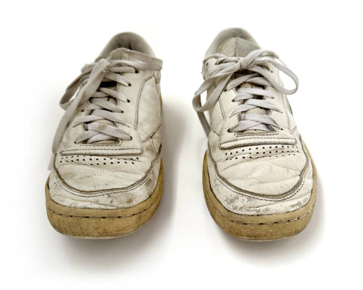

Authentic Age
Each pair is crafted to perfection with just the right amount of scuff, dirt, and character.

Why wait for your shoes to age like wine? With the Nike Plain Old Dirty Shoe, you get the look of a classic, lived-in pair, straight out of the box.
Buy Now

This isn’t just any shoe – it’s the sneaker that’s already seen it all. Scuffed, pre-dirtied, and ruggedly worn-in, the Plain Old Dirty Shoe is designed for those who want a head start on their sneaker’s journey. It's vintage Nike without the wait.
Each pair is crafted to perfection with just the right amount of scuff, dirt, and character.
No stiff breaking-in period. Every step feels like these shoes have been with you for years.
Designed to look like it’s been around the block – and then some. Authentic wear without the effort.
“I like them!”
- James L.
“Nike nailed it.”
- Donny B.
“Pretty good.”
- Cris C.
Own the only shoe that’s worn-out fresh from the box. Grab yours today and wear the trend that goes with any outfit.
Buy Now